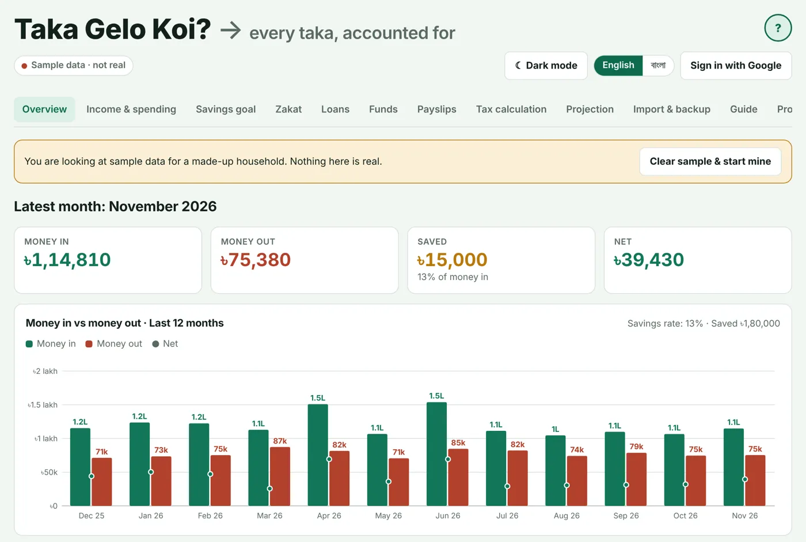
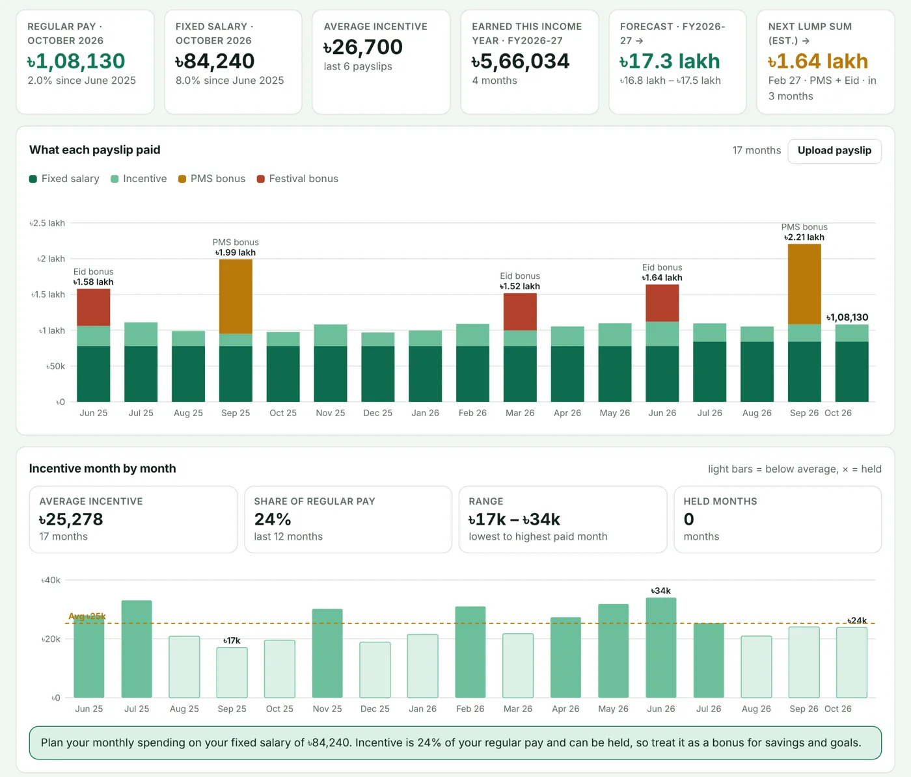
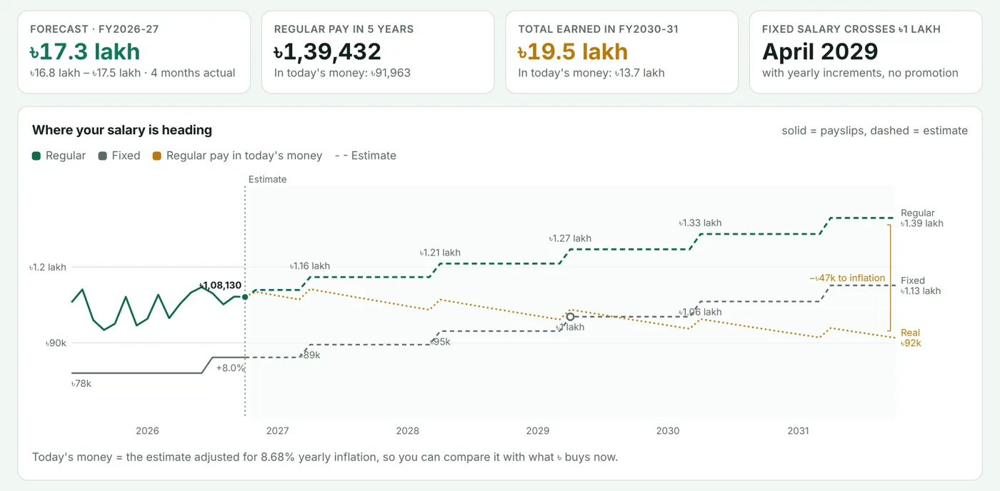
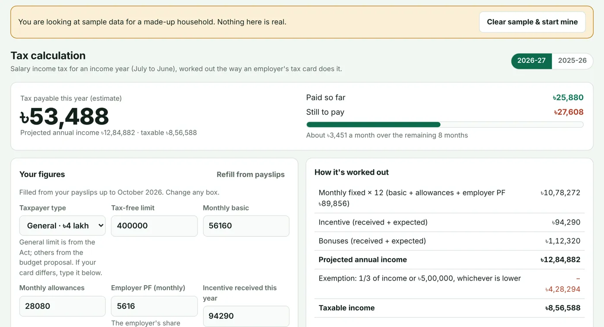
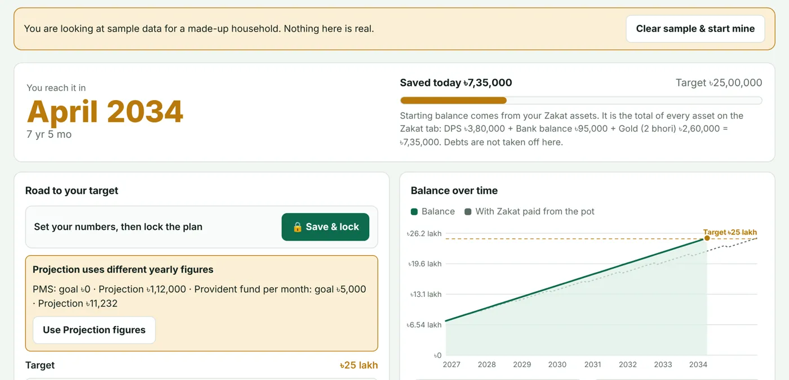
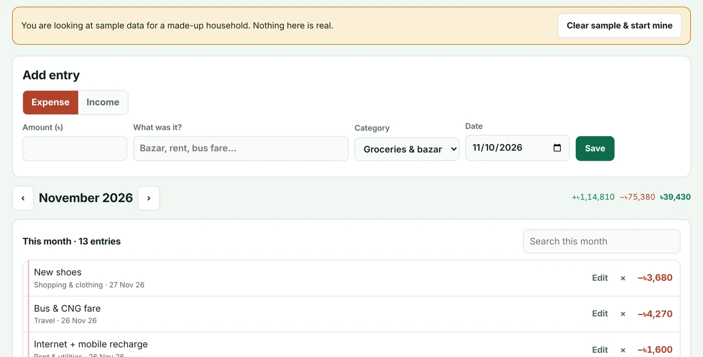
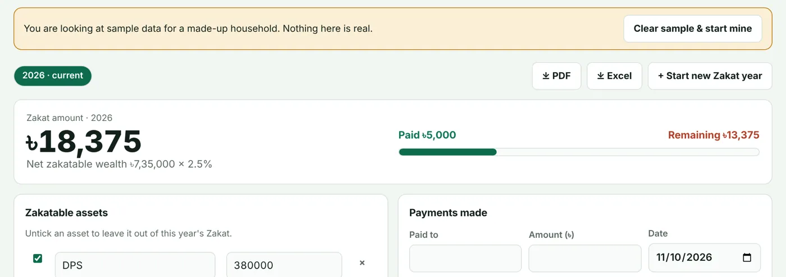
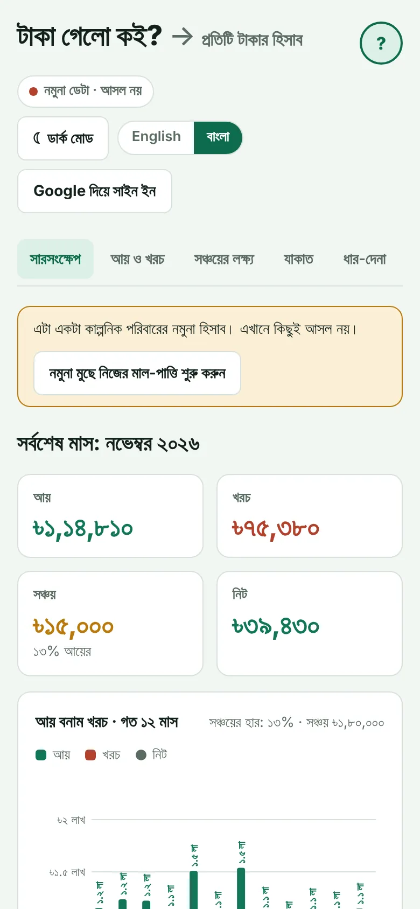
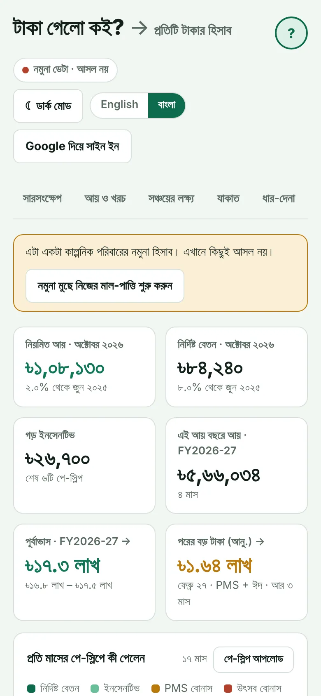

Product case study · Personal finance app
Taka Gelo Koi? A full money app, built from my own records
I kept my household accounts in Excel for 25 months. Every month I fixed broken formulas, retyped payslip figures and guessed how much tax I owed. So I turned the spreadsheet into an app anyone in Bangladesh can use: log money in Bangla or English, read payslip PDFs, work out income tax, project salary against inflation, plan savings and calculate Zakat. Every entry is encrypted on the phone before it is saved.

Every screen on this page shows the app's built-in sample data for a made-up household. None of it is my own money.
- 25 months
- of my own records it started from
- 12
- sections, from spending to tax and projection
- 2 languages
- full Bangla and English
- AES-256
- encryption on the device before saving
Why a spreadsheet was not enough
A spreadsheet is fine until it is not. Mine had one sheet per month, categories typed slightly differently each time, payslip figures copied by hand and a tax estimate I redid every June. I could see what I spent, but not where my salary was heading, whether a raise beat inflation, or when a savings goal would actually be reached.
Most money apps in the market are built for other countries. They do not know a Bangladeshi payslip, the income tax slabs, Eid bonuses, PMS, provident fund or Zakat, and many of them want your data on their servers in plain text.
Six parts, one app
- Income and spendingLog entries in Bangla or English, with the category picked from the item name. Monthly budgets per category turn red when you go over. An existing Excel tracker imports in one step.
- Payslip readerUpload payslip PDFs or a .zip of them. The app reads fixed pay, incentive, bonuses, provident fund and tax on the phone itself and never keeps bank account or TIN numbers. It then charts what each payslip paid and how incentive moves month to month.
- Income taxWorks out the year's tax the way an employer's tax card does: taxable income, each slab, the investment rebate, what has been deducted and what is still due, with a hint of how much more investment would lower the bill.
- Salary projectionProjects fixed and regular pay for the next five years from the latest payslip, with yearly increments, bonuses and a what-if-I'm-promoted option, then shows it again in today's money using BBS inflation, so a raise can be judged against prices.
- Savings goalSet a target and the money going in each month, and the app finds the month the goal is reached, the milestones on the way and an execution plan for each period.
- Zakat, loans and fundsA Zakat calculator with assets, debts, nisab and a record of payments, a register of money lent and borrowed with repayments, and separate funds for money held for others.
What it looks like






Fully in Bangla, made for a phone
Every label, number and month switches to Bangla with one tap.


Only you can read your entries
Sign in with Google, or use it without an account and keep everything in the browser.
Every document is compressed and encrypted in the browser with AES-256-GCM before it leaves the phone. The key is protected by your passphrase (600,000 rounds of PBKDF2) and a recovery code. Neither I nor Google can read anyone's entries.
One encrypted copy is kept per day for 30 days, so a mistake can be rolled back. Full backups download as a file at any time.
Three lessons from building it
- Start from a real problem you have.Every feature exists because I needed it in my own monthly routine first. That made it easy to say no to features nobody would use.
- Messy inputs are most of the work.Payslips change layout, re-issued copies repeat months and Excel sheets are never consistent. Most of the code is cleaning and checking, the same as any analytics job.
- Trust is a feature.People will not put their salary into an app they cannot trust, so encryption and a clear privacy policy came before any new screen.